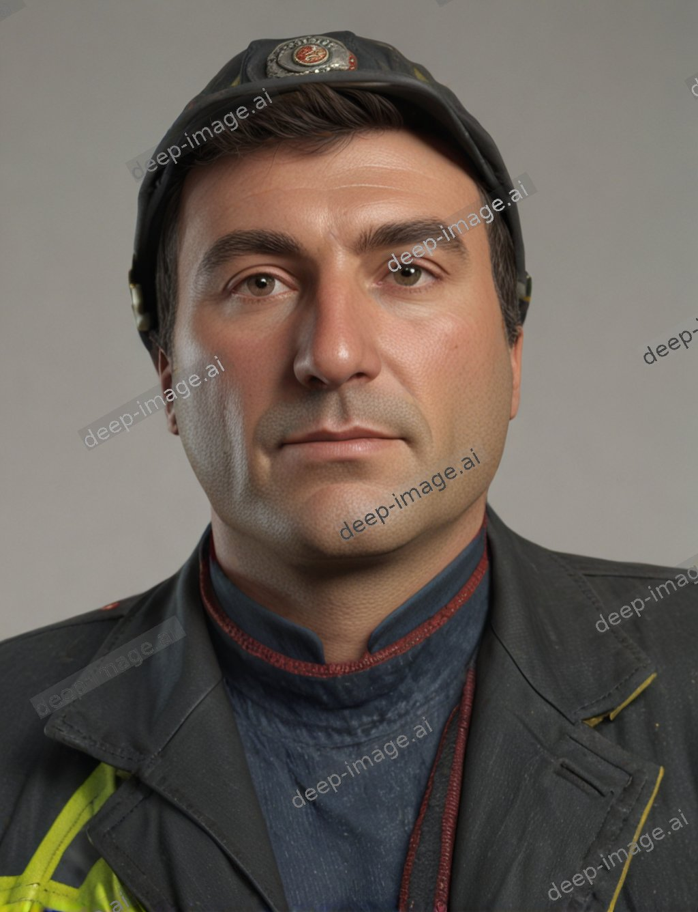

Deep Learning#
As we say, black box from perspective of function such as f(x)=ax+b only have two parameters also in chatGPT model have 175 billion parameters. compare and surprise. Now, show f(x) to form of Artificial Neural Network.
Above figure show ANN with two input and in the real case input more than 2. Another ANN as shown in the following that f(x) related to n feaure of input.
for example ANN able to segment main image to some parts which name segment.
YOLO creat for object detection and classification. If we used YOLO architecture for image of mnist 28*28 in one case, it have 421642 parametrs
Deep neural networks (DNNs) significantly enhance image processing tasks like sharpening, enhancement, background subtraction, and substitution. Examples include:
Image Sharpening: Convolutional neural networks (CNNs) such as SRCNN increase resolution and detail in images.
Image Enhancement: Techniques like Denoising Autoencoders (DAEs) and Generative Adversarial Networks (GANs) improve image quality by removing noise and enhancing features.
Background Subtraction: Networks like FgSegNet accurately segment and subtract the background in videos.
Background Substitution: Models like DeepLab and U-Net facilitate high-quality background replacement in images.
A bit of fun
Change Background


Inside Deep Neural Network#
The emphasized part of the image, which the neural network focuses on for animal classification using the ResNet network trained on ImageNet.
WordNet#
The database contains 155,327 words organized in 175,979 synsets (sets of cognitive synonyms) for a total of 207,016 word-sense pairs; in compressed form, it is about 12 megabytes in size.
Related Forms and Semantic Relations:
Synonyms: glad, joyful, jubilant
Antonyms: sad, unhappy, sorrowful
Related Words: elated, cheerful, blissful, delighted
Hypernyms (more general terms): emotional, feeling
Hyponyms (more specific terms): blissful, euphoric, overjoyed
ImageNet#
ImageNet is an image dataset organized according to the WordNet hierarchy average 1000 images to illustrate each synset. ImageNet-21k contains 14,197,122 annotated images divided into 21,841 classes
Deep Dream and Art#


Deep Inside surgery#
Deep litte carefull#
A deep neural network effectively acts as an information distillation pipeline, with raw data going in (in this case, RGB pictures) and being repeatedly transformed so that irrelevant information is filtered out (for example, the specific visual appearance of the image), and useful information is magnified and refined (for example, the class of the image).
There are a few things to note here:
The first layer acts as a collection of various edge detectors. At that stage, the activations retain almost all of the information present in the initial picture. As you go deeper, the activations become increasingly abstract and less visually interpretable. They begin to encode higher-level concepts such as “cat ear” and “cat eye.”
Deeper presentations carry increasingly less information about the visual contents of the image, and increasingly more information related to the class of the image.
The sparsity of the activations increases with the depth of the layer: in the first layer, almost all filters are activated by the input image, but in the following layers, more and more filters are blank. This means the pattern encoded by the filter isn’t found in the input image.
Feature-visualization#
Similar to Brain Mapping
Areas of the brain that control various functions of the body by stimulating specific points of the brain
Functional Areas: The map highlights which regions of the brain control various functions, such as movement, sensation, speech, and vision.
VGG16 A Type Of Deep
for Xception model
Which Input (X) Excite specific layer#
Response :Feature Visualization
Second Channel is excited optimality using this pattern
Block 4 Conv 1 is excited optimality by:
GoogLeNet trained on the ImageNet.
Type of neural network and the data it is trained on significantly affect feature visualization.
Understanding Feature Visualization in Neural Networks#
Feature visualization in neural networks is a method for exploring the internal mechanisms of deep neural networks.
Method: Identifying an input that maximizes the output of a specific layer, we can define the optimization as finding an input that maximizes a target layer’s output.
This approach allows us to understand what kind of stimuli activate particular points within the intricate structure of the deep network.
Deeper layers often respond to input concepts that are more abstract and closer to human interpretation, indicating that these deep points are triggered by inputs with richer semantic meaning.
Fusion of Simultaneous Layers: Optimal Way to Specific Input Leading to DeepDream